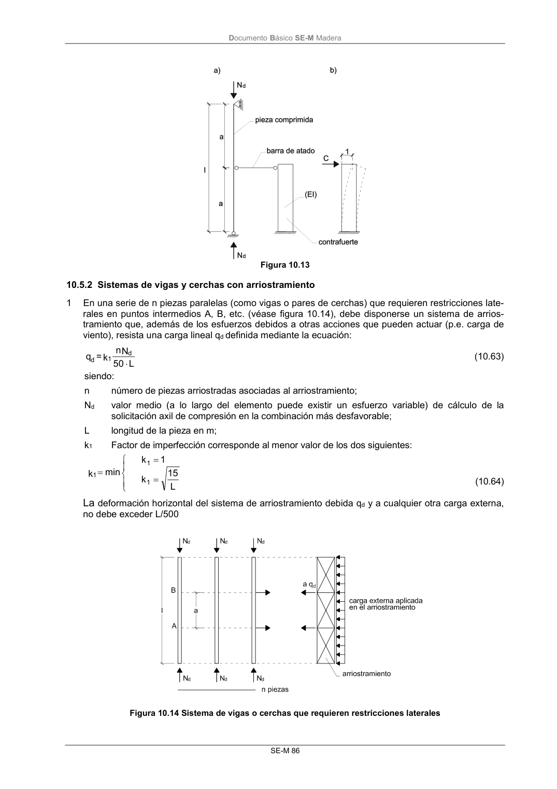

DB-SE-M Madera · edición 2019-12-20 · capa oficial
Documento DB-SE-M-oficial · SHA-256 del PDF 26b5819839ebfda78b0b119c5e76a0a37773b0d763c05688541870075df93718
Copia fiel del PDF fuente · Fuente oficial
Ficha de la disposición en la fuente oficial
Formatos: JSON del segmento · Markdown
10.5.2 Sistemas de vigas y cerchas con arriostramiento 1 En una serie de n piezas paralelas (como vigas o pares de cerchas) que requieren restricciones late- rales en puntos intermedios A, B, etc. (véase figura 10.14), debe disponerse un sistema de arrios- tramiento que, además de los esfuerzos debidos a otras acciones que pueden actuar (p.e. carga de viento), resista una carga lineal qd definida mediante la ecuación: L 0 5 N n k = q d 1 d (10.63) siendo: n número de piezas arriostradas asociadas al arriostramiento; Nd valor medio (a lo largo del elemento puede existir un esfuerzo variable) de cálculo de la solicitación axil de compresión en la combinación más desfavorable; L longitud de la pieza en m; k1 Factor de imperfección corresponde al menor valor de los dos siguientes: L 15 k 1 k min k 1 1 1 (10.64) La deformación horizontal del sistema de arriostramiento debida qd y a cualquier otra carga externa, no debe exceder L/500 Figura 10.14 Sistema de vigas o cerchas que requieren restricciones laterales DocumentoBásico SE-M Madera SE-M 87
